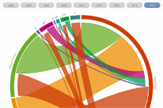
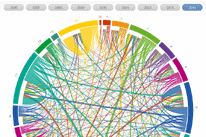
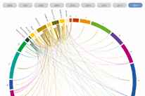
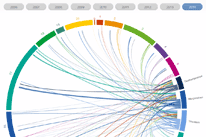

Wanderungsanalyse Basel-Stadt
Folgende interaktive Grafiken stehen für die Datenexploration zur Verfügung:




Zu- und Abwanderungen der Bewohner von Basel-Stadt
Umzüge innerhalb des Kantons Basel-Stadt
Umzüge der Schweizer innerhalb des Kantons Basel-Stadt
von Christa Moll Freddi & Jonas Bieri,
Statistisches Amt Basel-Stadt